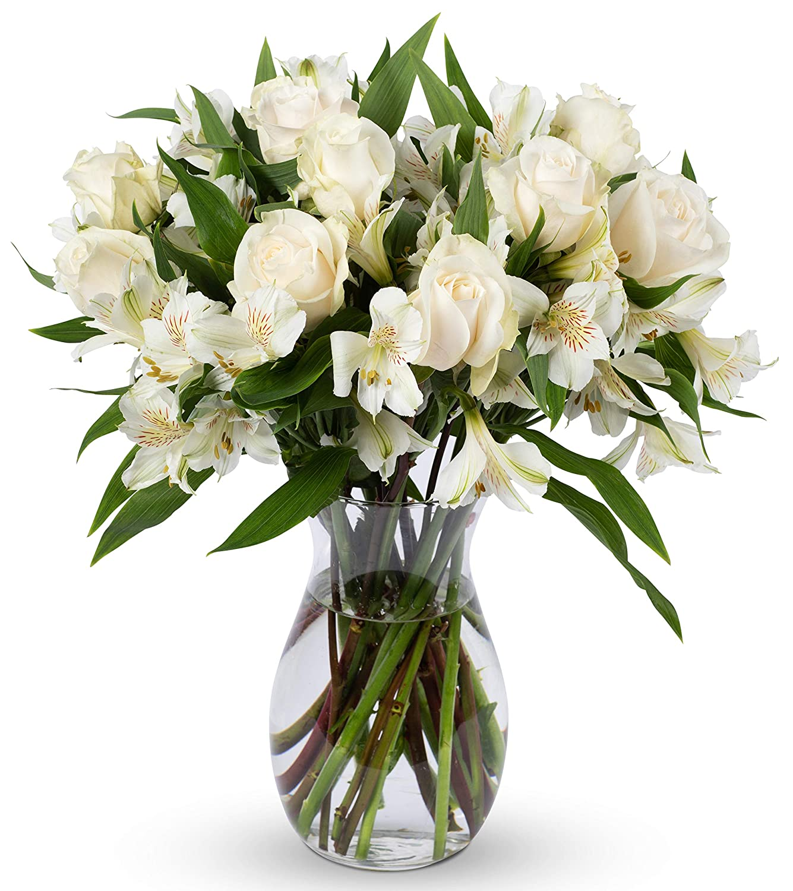
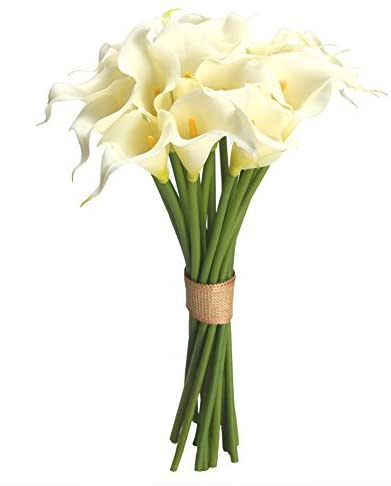
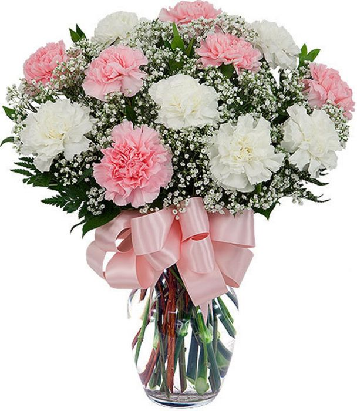
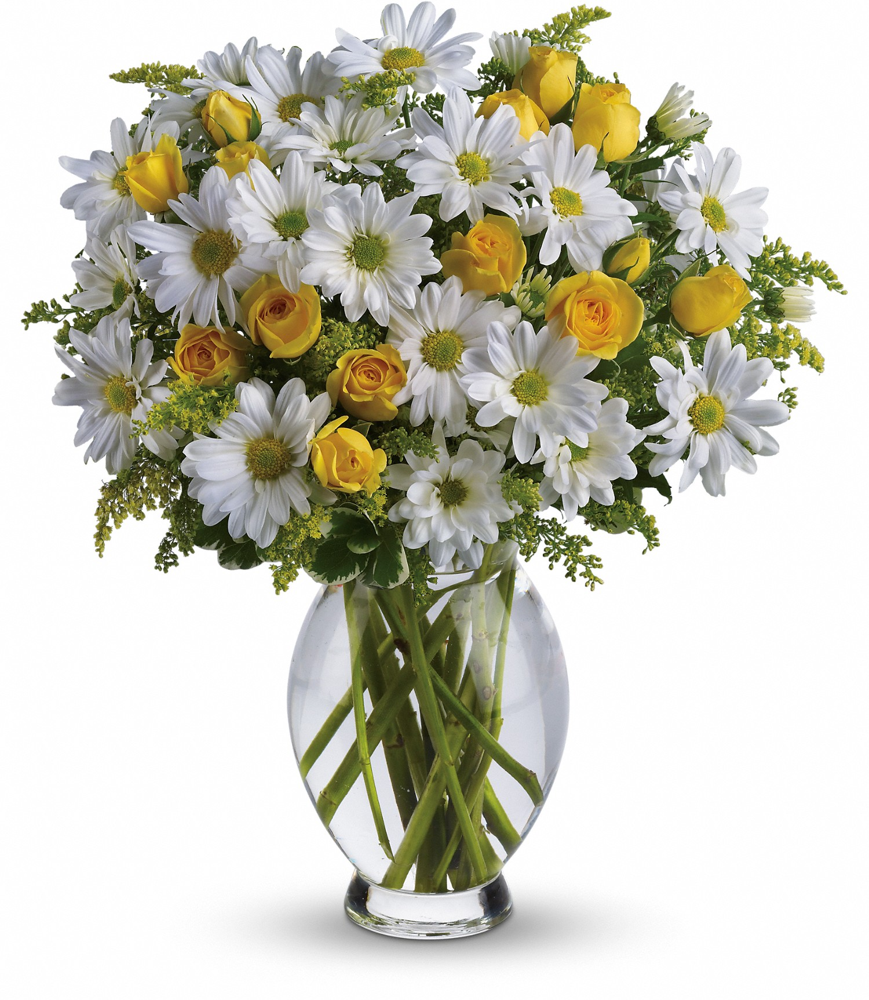
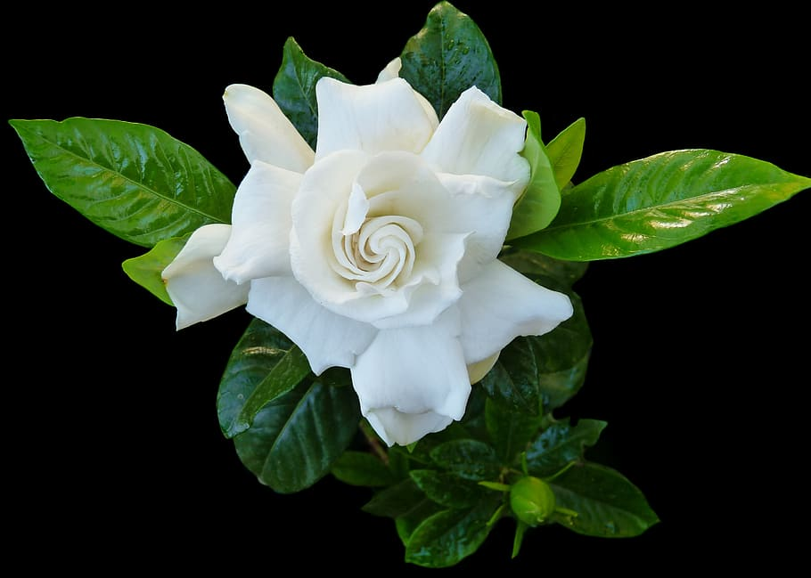
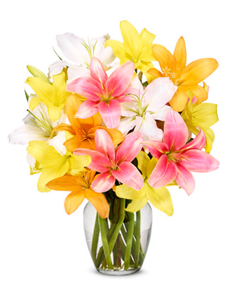

| Flowers |
Identifications |
|  |
Alstroemerias are more often called either Peruvian Lilies or Lilies of the Incas and are native to South America.
Peruvian Lilies come in a variety of warm colors like pink and orange and are symbolic of friendship, wealth and devotion.
These flowers bloom in late spring/early summer when exposed to direct sunlight and watered weekly (water more often when you notice soil looking dry,
water less when the soil looks soggy). |
|  |
The Calla Lily is associated with faith and purity. For this reason, religious figures like the Virgin Mary are often depicted holding a bouquet of calla lilies.
Calla lilies are also often associated with sympathy and rebirth, making them a popular flower at sympathy occasions.
These beauties grow in full to partial sunlight and should be planted in spring to bloom in late summer. with continued care, they can grow up to two feet long!
Once cut, calla lilies can last 2 weeks in a vase. |
|  |
Carnations come in 3 different types: large flowered carnations, spray carnations, and dwarf flowered carnations.
Large flowered carnations can grow to over 20 inches high with one large bloom per stem. These are also referred to as the florist’s carnation.
Spray and dwarf carnations have smaller blooms but have multiple blooms per stem. These carnations grow to 12 inches and are more commonly found in gardens.
When planting carnations take care to plant in a well-draining soil and in an area with ample sunlight. Carnations can have different meanings depending on their color – a pink carnation symbolizes motherly love,
a white carnation means good luck, a yellow carnation means disappointment, etc. Their versatility has made them an extremely popular flower for all occasions. |
|  |
Daisies are found on every continent other than Antarctica and belong to one of the largest known plant families. Daisies symbolized innocence, a connotation that comes from the Victorian era.
Based on what color the daisy is, the flower can take on another meaning. Daisy flowers prefer full sun and average soil conditions. Depending on the variation, they can grow to anywhere between 8 inches to 4 feet.
Care tip: only water during the summer only if rainfall is less than 1 inch per week. |
|  |
Gardenia’s are most famous for their scented and waxy white flowers that can bring a garden to life. Depending on your geographical location (and personal preference) you get to decide whether your gardenia will live indoors or outdoors.
To ensure that your gardenias bloom throughout their growing season, keep the soil well drained and at a pH of 4.5 to 5.5 regardless of whether they are planted in a pot or outside in the garden. These plants also need ample amounts of water,
so make sure to never let your gardenia dry out – water regularly. |
|  |
Lilies are one of the most popular and versatile flowers in the world. Coming in a variety of colors and known for their strong fragrance, this elegant bloom is a show-stopper on its own while also serving as the perfect complement to any bouquet.
In fact, lilies are one of the most popular flowers in the world, and it’s not hard to see why. There are over 100 different types of true lilies belonging to the “lilium” genus. Lilies are found dominantly in the Northern Hemisphere of the world |